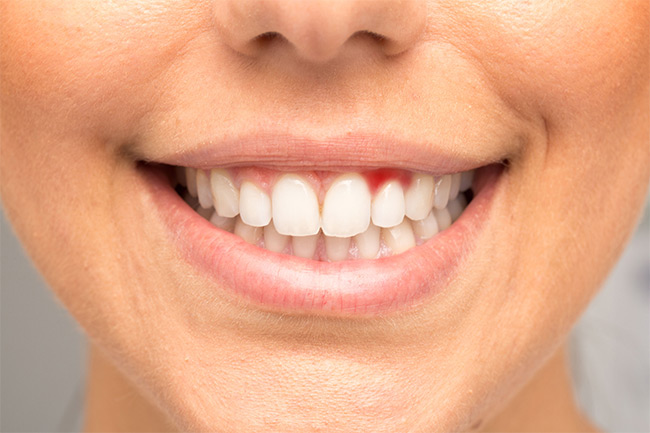

歯ぎしりや食いしばりでお悩みの方へ
～ブラキシズムの治療～
無意識で行ってしまう「歯ぎしり」「食いしばり」を「ブラキシズム」といいます。このブラキシズムを放置していると口腔内だけでなく、身体全体にトラブルを引き起こす可能性を秘めています。少しでも症状があるようなら早めに検査し、必要に応じて咬み合わせ治療などで改善しましょう。こちらでは三島駅・下土狩駅近くの歯医者「MI総合歯科クリニック」がブラキシズムの特徴や症状、治療法などについてご説明します。
ブラキシズムとは？

ブラキシズムとは別名「口腔悪習慣」と呼ばれる、お口の中で無意識に行われる悪い咬みクセのことです。本来「咀嚼（そしゃく）筋」は食べ物を咬むための筋肉ですが、ブラキシズムは、食事以外の時間にも異常運動を意識せずに行ってしまうのです。
ブラキシズムの種類
ブラキシズムは大きく3種類に分けられます。日本ではブラキシズムを「歯ぎしり」のように訳しますが、実はそれだけではありません。どれも無意識に行われ、放置をすればあごやお口まわりの組織にダメージが蓄積されます。症状がひどくなる前に、適切な治療を受けることが大切です。
※表は左右にスクロールして確認することができます。
| グライディング | クレンチング | タッピング |
|---|---|---|
| 一般的に「歯ぎしり」といわれる症状です。ギリギリと音を立てながら歯と歯を強く擦り合わせるクセで、おもに就寝中に発生します。歯がすり減ってしまうという問題点を抱えています。 | いわゆる「食いしばり」と呼ばれる症状です。グライディングに比べると音を立てることがないので、他人から指摘も受けづらく、発見が遅れるケースが多くみられます。 | 上下の歯を連続的に速い動作で咬み合わせるクセです。カチカチといった音を出すのが特徴ですが、グライディングやクレンチングに比べると起こりづらい症状です。 |
ブラキシズムのおもな症状
ブラキシズムのおもな症状
ブラキシズムによって引き起こされる症状を挙げます。複数の項目に思い当たる節がある方は、早急に歯医者で治療を受けましょう。また、インプラント治療を受けた経験のある方は、インプラントに過度な負担がかかり、あごの骨から抜け落ちてしまうこともあるので注意が必要です。
- 自分の歯や被せ物などの人工歯が割れる、欠ける、すり減る
- 歯が浮いたような感覚がある
- 歯を指や舌で押すと揺れる
- 冷たい物を口に含むとしみる
- あごに痛みやだるさがある
- あごを開きにくい
歯ぎしりの発生メカニズム
ブラキシズムが起こるのはおもに睡眠中で、とくに眠りの浅いノンレム睡眠中に頻発するといわれています。ただし、なぜ就寝時に起こるのかという理由については残念ながら解明されていません。また、ブラキシズムはストレスが原因であることも多いのですが、これは直接的なものではなく、さまざまな要因が複合して引き起こされると考えられています。
ブラキシズムの治療法
当院では、ブラキシズムに対して咬み合わせ治療を用います。患者様のお口の状態や症状に合わせて修復物・金属冠・入れ歯、そのほか就寝時に着用するマウスピースなどを利用し、正しい咬み合わせに導きます。まずはご来院いただき、お悩みをお聞かせください。それぞれに合う方法で、ブラキシズムの治療を行わせていただきます。